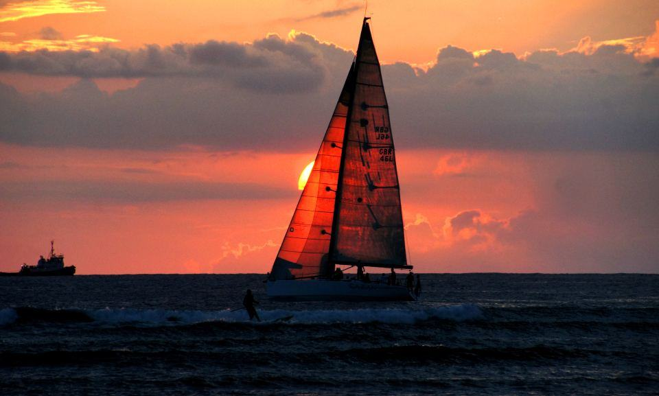
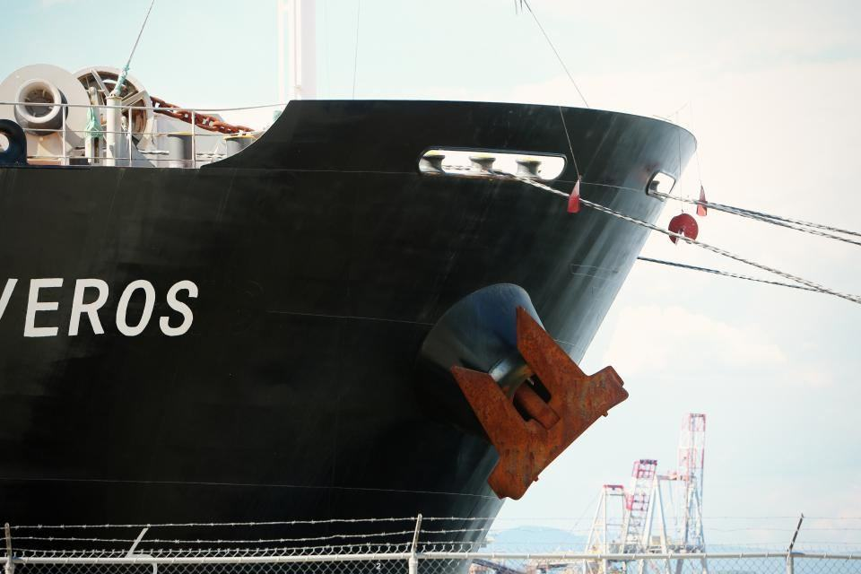
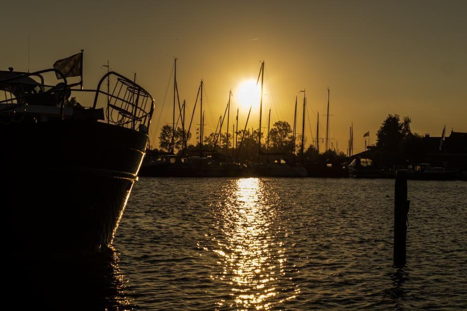
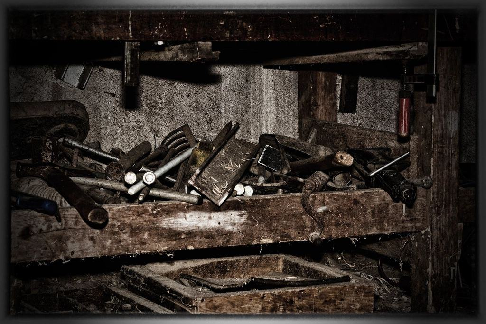
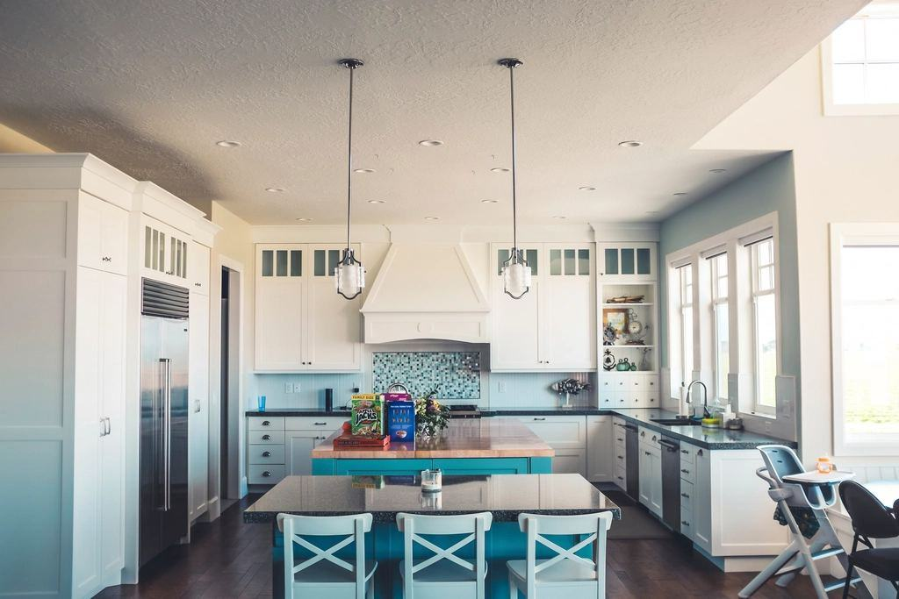

Tjänster
I dag är vi 19 anställda: montörer med bakgrund som plåtslagare och motormän, två marinarkitekter och en svetsare med klassningsbevis. Vi arbetar mest på varv i Karlskrona och längs södra Östersjön, men åker ombord var fartyget än ligger när något måste lagas mellan två turer.
Vilket fartyg gäller det?

Passagerarfärjor
En färja har hundratals hytter, flera restauranger och ett bildäck – och får bara ligga på varv några veckor om året. Vi planerar ombyggnaden månader i förväg och arbetar i skift dygnet runt när fartyget ligger inne.
Elva färjor i Östersjötrafik har fått ny ventilation av oss.

Örlogs- och myndighetsfartyg
Marinens och myndigheternas fartyg har krav på skydd mot gas och rök, övertryck i citadell och dokumentation på varje komponent. Vår personal är säkerhetsprövad för arbete på örlogsbasen.
Ramavtal för underhåll av ventilation på mindre ytstridsfartyg sedan 2018.

Arbetsfartyg och fiske
Bogserbåtar, lotsbåtar och fiskefartyg har trånga maskinrum och besättningar som bor ombord i veckor. Vi bygger om med komponenter i syrafast stål som tål salt och vibrationer.
Från 12 meters lotsbåtar till 90 meters forskningsfartyg.

Varv och marina verkstäder
I varvshallarna svetsas och målas det dygnet runt. Vi bygger punktutsug, allmänventilation och tilluft som klarar hallar på 20 meters takhöjd.
Tre varvshallar i Karlskrona och en i Ronneby har ventilation från oss.
Planerat i månader, byggt på dygn
- 1

Ombord i förväg
Vi besöker fartyget under drift, mäter upp och fotograferar varje utrymme som berörs.
- 2

Ritning och godkännande
Ritningar och beräkningar skickas till klassningssällskapet för godkännande före varvet.
- 3

Varvsliggning
Material är förtillverkat och märkt. Montaget går i skift tills fartyget ska ut.
- 4

Provtur
Flöden, tryck och spjäll provas till sjöss tillsammans med besättningen.
Godkänt för sjöfart
- Klassningsgodkänd dokumentationRitningar och beräkningar godkända av de stora klassningssällskapen.
- Svetsare med klassningsbevisEgen svetsare godkänd för stål och aluminium ombord.
- Säkerhetsprövad personalMontörer med behörighet för arbete på marinens anläggningar.
- ISO 9001 sedan 2009Certifierat kvalitetsledningssystem för projekt ombord och på land.